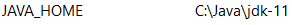

Hadoop instalacija za Windows
by Amon
Uvod:
Ovaj guide pišem kako bih olakšao živote svih koji se struggleaju sa instalacijom ovog labosa. Ja sam osobno izgubio par dana da skužim kako se settupa ovaj cijeli clusterfuck od labosa.
Prvo sam ga probao instalirati na Linux virtualci (jer Hadoop kao podržava Linux), ali je bilo problema s podešavanjem portova (što vjerujem da problem zbog toga što sam koristio virtualku a ne pravi Linux) tako da ne preporučujem takav pristup i držite se Windowsa (kako pri ovom labosu tako i u životu :)
Inače, ovaj guide je napravljen prema uputama s ove stranice:
https://kontext.tech/column/hadoop/377/latest-hadoop-321-installation-on-windows-10-step-by-step-guide
Samo što ovdje imam određene izmjene i poboljšanja (i stvari koje tamo ne pišu, a potrebne su za ovaj labos)
0.1. Prije same instalacije potrebno je poduzeti određene mjere. Prva i osnovna jest provjeriti ima li vaš user folder dijakritike. Dakle ići na C:\users i provjeriti ima li user folder dijakritike. Ako nema prijeđite na sljedeći korak. Ako ima… Well tough luck, ali morat ćete ih se riješiti jer će Hadoop raditi neke foldere u user folderu, a nije sposoban pročitati dijakritike (UTF-8 je ipak malo prenapredan za ovaj program).
Za to imate 2 opcije. Opcija br. 1 je ručni rename user foldera, samo pratite korake sljedećeg videa:
Ali tu ima problem a to je da neki programi imaju hardkodiranu vrijednost user foldera pa ćete ih morati opet namještati kada ih budete pokretali, npr. tako je bilo meni sa Visual studiom (and yeah, ja sam bio jedan od tih s dijakriticima u user folderu).
Druga opcija (koja je u teoriji puno bolja) je stvaranje novog user accounta bez dijakritika jer će se onda za njega stvoriti njegov vlastiti user folder i dalje tamo radite sve kao u ostatku ovog guidea. Zašto ja nisam to napravio? Jer sam se tek sad sjetio da bi to moglo funkcionirati. Naravno, ova opcija je puno bolja, ali je nisam testirao (pa ako ju netko testira neka slobodno javi), dok opcija br. 1 sigurno radi.
0.2. Za pokretanje ovog programa trebate imati javu. Aku ju kojim slučajem nemate (and shame on you if you don’t), onda pogledajte ovaj guide https://www.guru99.com/install-java.html. U cmd upišite java -version i morate dobiti nešto ovakvo:
Ali i ako to piše, još niste oslobođeni ovog dijela s javom. Naime, morate provjeriti imate li u system varijablama zapisanu JAVA_HOME varijablu. Da to vidite odite na search > edit the system environment variables > u otvorenom prozoru imate enviroment variables pri dnu. Tu sad gledajte pod user variables i vidite imate li varijablu JAVA_HOME. Ako ju nemate, dodajte ju tako da napišete path do java filea na vašem kompu. Na kraju dobijete nešto ovakvo:

Ovo je bilo samo zagrijavanje, sad kreče Hadoop dio…
Prvo morate skinuti Hadoop. Gore navedeni guide kaže da skinite verziju 3.2.1., ali problem je što ta verzija ima neki bug koji ima gomilu posla da se razriješi, a verzija 3.2.2. ga više nema tako da skinite tu verziju. Link za tu verziju nalazi se ovdje:
https://www.apache.org/dyn/closer.cgi/hadoop/common/hadoop-3.2.2/hadoop-3.2.2.tar.gz
Nakon toga morate skinuti bin datoteku s ovog linka: https://github.com/cdarlint/winutils/tree/master/hadoop-3.2.2/bin i onda službeni bin datoteku zamijenite s tom.
Sada morate napraviti HADOOP_HOME environment varijablu. Dakle treba pratiti sve kao što je bilo i sa JAVA_HOME varijablom i trebate ju dodati da pokazuje u vaš Hadoop folder, kod mene je to ovako:
- At this point, trebali biste moći pogledati prepoznaje li komp Hadoop u cmd-u s naredbom:
hadoop -version i trebate dobiti ovako nešto:
VAŽNO: Svaki put kada napišem da se koristi cmd, morate ga pokrenuti kao administrator. Neke naredbe se neće htjeti pokrenuti inače.
Pronaći core-site.xml file u \etc\hadoop folderu (kod mene je to C:\Programiranje\Hadoop\etc\hadoop) i tamo na dno umjesto onog
<configuration> <\configuration> stavite
<configuration>
<property>
<name>fs.default.name</name>
<value>hdfs://0.0.0.0:19000</value>
</property>
</configuration>
Pronaći marped-site.xml file u istom folderu i opet umjesto configuration elemenata trebate staviti ovo:
<configuration>
<property>
<name>mapreduce.framework.name</name>
<value>yarn</value>
</property>
<property>
<name>mapreduce.application.classpath</name>
<value>%HADOOP_HOME%/share/hadoop/mapreduce/*,%HADOOP_HOME%/share/hadoop/mapreduce/lib/*,%HADOOP_HOME%/share/hadoop/common/*,%HADOOP_HOME%/share/hadoop/common/lib/*,%HADOOP_HOME%/share/hadoop/yarn/*,%HADOOP_HOME%/share/hadoop/yarn/lib/*,%HADOOP_HOME%/share/hadoop/hdfs/*,%HADOOP_HOME%/share/hadoop/hdfs/lib/*</value>
</property>
</configuration>
Sada nađite yarn-site.xml u istom folderu i opet zamijenite configuration dio s ovim dijelom:
<configuration>
<property>
<name>yarn.nodemanager.aux-services</name>
<value>mapreduce_shuffle</value>
</property>
<property>
<name>yarn.nodemanager.env-whitelist</name>
<value>JAVA_HOME,HADOOP_COMMON_HOME,HADOOP_HDFS_HOME,HADOOP_CONF_DIR,CLASSPATH_PREPEND_DISTCACHE,HADOOP_YARN_HOME,HADOOP_MAPRED_HOME</value>
</property>
</configuration>
Napravite folder data u root nodeu (dakle kod mene je to C:\Programiranje\Hadoop). U taj folder stavite novi folder dfs. I na kraju u taj dfs stavite 2 foldera: name i data. Ta 2 foldera će se kasnije koristiti.
Sada odite do \etc\hadoop foldera i nađite hdfs-site.xml file i tamo umjesto configuration dijela upišite:
<configuration>
<property>
<name>dfs.replication</name>
<value>1</value>
</property>
<property>
<name>dfs.namenode.name.dir</name>
<value>file:///C:/Programiranje/Hadoop/data/dfs/name</value>
</property>
<property>
<name>dfs.datanode.data.dir</name>
<value>file:///C:/Programiranje/Hadoop/data/dfs/data</value>
</property>
</configuration>
Dakle ove pathove fileova koje ste dodali sada morate staviti gore, tamo gdje imamo ove <value> propertyje.
- Sada idite u cmd (admin mode) i pozicionirajte se u bin folder. Tamo upišite naredbu: hdfs namenode -format
Nakon toga biste trebali dobiti dugi zapis u cmd-u koji završava ovako:
Konfiguracija je gotova (basically), ostalo je još samo pokrenuti sve.
Pozicionirajte se u sbin folder i upišite naredbu start-dfs.cmd i trebala bi iskočiti 2 cmd-a. Pričekajte malo i idite na sljedeće linkove i pogledajte ima li na njima nešto:
http://localhost:9870/dfshealth.html#tab-overview
http://localhost:9864/datanode.html
Trebalo bi biti neki preglednik na njima. Nećete ga koristiti ni ništa, ali ako je tamo onda sve valja (za sada).
Sada idite u sbin i upišite start-yarn.cmd i trebala bi iskočiti još 2 prozora gdje će se nešto vrtjeti. Ako se ne pokrenu to je možda do toga što imate yarn instaliran na kompu. Ako je tako onda će se yarn na kompu poklat sa yarnom iz hadoopa i to morate riješiti tako da upišete sljedeće naredbe:
@rem start resourceManager
start "Apache Hadoop Distribution" C:\Programiranje\Hadoop\bin\yarn resourcemanager
@rem start nodeManager
start "Apache Hadoop Distribution" C:\Programiranje\Hadoop\bin\yarn nodemanager
@rem start proxyserver
@rem start "Apache Hadoop Distribution" yarn proxyserver
na kraj start-yarn.cmd datoteke (otvorite ju s nodepadom).
Pogledajte imate li na sljedećem linku nešto pokrenuto:
http://localhost:8088/cluster
Ako imate nešto onda ste GOTOVI.
Barem s instalacijom…
Završna riječ (čitaj rant) autora:
Očito je da ekipa sa predmeta već par godina ima instaliran Hadoop na kompovima i da ne žele nikako dati neke upute za setup (jer je očito da će izgubiti vrijeme na pisanje takvih uputa, a svi znamo da je value(vrijeme_2_ljudi_na_zavodu) >> value(vrijeme_70 studenata_na_predmetu)) nego su samo otišli na službene stranice od Hadoopa i samo su nam dali link nek se snalazimo (a instalacija je daleko od trivijalne i ako bilo gdje slightly pogriješite basically morate sve ispočetka raditi)